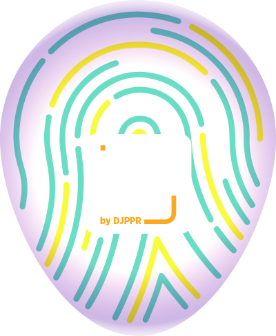

An Inclusive Festival
Smart Today For
Smarter Tomorrow
Creative Economy: Passion • Grow • Invest
Halo Rekans
Selamat datang di InFest by DJPPR, festival literasi ekonomi untuk saling belajar dan berdialog seputar pengelolaan keuangan, pembiayaan dan risiko. Ayo siapkan dirimu jadi bagian dari generasi literasi ekonomi dan punya kultur investasi yang sehat.
Menjadi generasi literasi ekonomi yang melek risiko keuangan dan investasi adalah langkah menuju bangsa Indonesia yang kuat.
Langkah tersebut dimulai dari kita, ya, Kita!
Surabaya
Jumat | 27 • 9 • 2019
13.00 - 17.30 WIB
KUNOKINI
Cafe & Resto
Jl. Raya Prapen No.69,
Panjang Jiwo, Tenggillis Mejoyo,
Surabaya
Panjang Jiwo, Tenggillis Mejoyo,
Surabaya
Narasumber Inspiratif
Luky Alfirman
Dirjen Pengelolaan Pembiayaan dan Risiko
Heri Setiawan
Direktur Pengelolaan
Risiko Keuangan Negara
Risiko Keuangan Negara
Ario Pratomo
Content Creator
Novi Puspita Wardani
Kepala Subdirektorat Pengelolaan
Portofolio Surat Utang Negara
Portofolio Surat Utang Negara
Nucha Bachri
Co-Founder Parentalk
Host by:
Reza Natta Rahmanto
MC | Radio Anouncer
MC | Radio Anouncer
APBN:
#UangKitaUntukKita
#UangKitaUntukKita
Creative Economy
& Creative Financing
Millenials Parenting:
Mengelola Investasi
Keluarga Muda
Keluarga Muda
FAQ
Sudah siap jadi Rekans yang sadar risiko keuangan?
Daftarkan dirimu sekarang!
Daftarkan dirimu sekarang!
Bagikan Informasi ini dan nantikan InFest by DJPPR
di kota mu, Rekans!
di kota mu, Rekans!